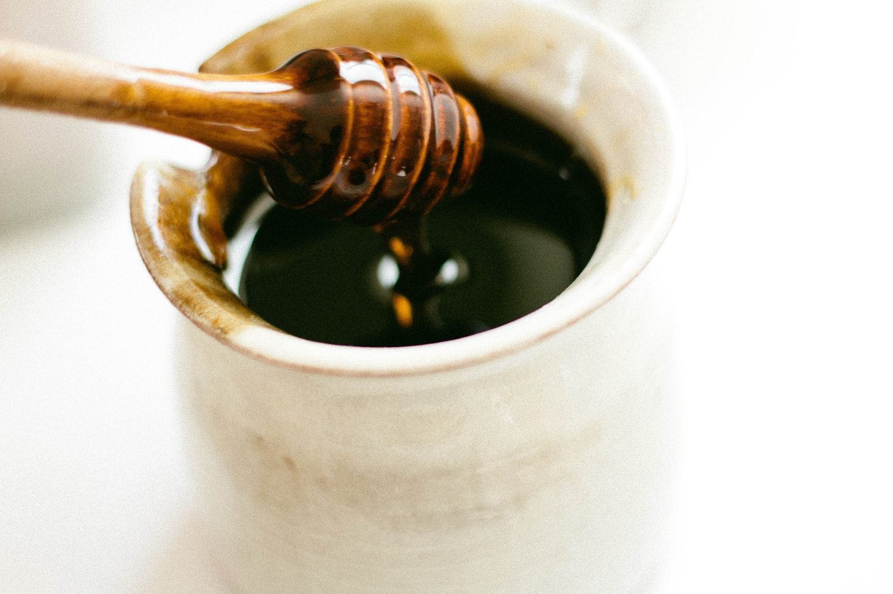
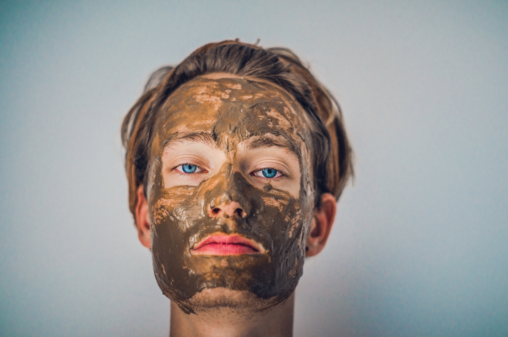
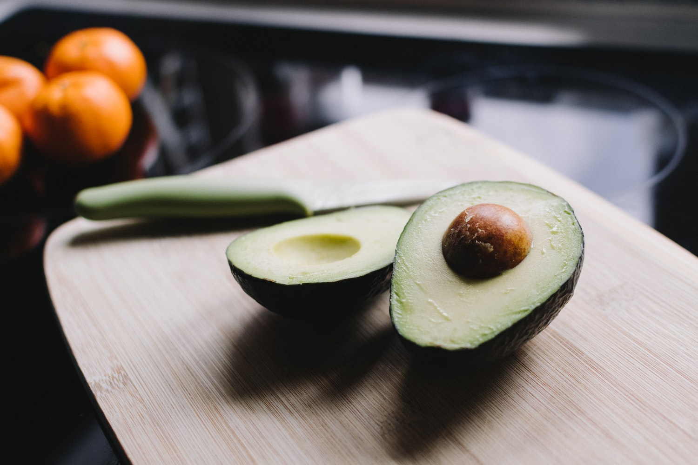
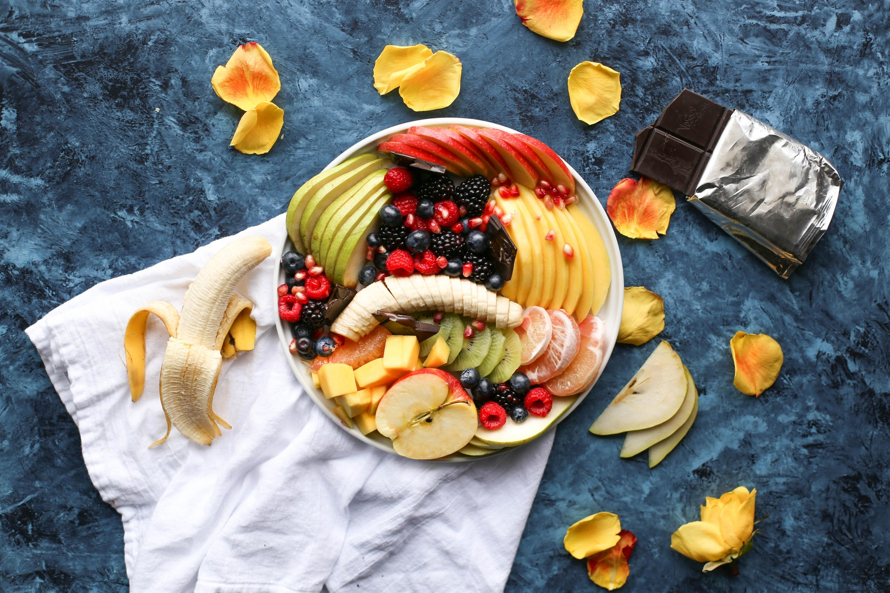
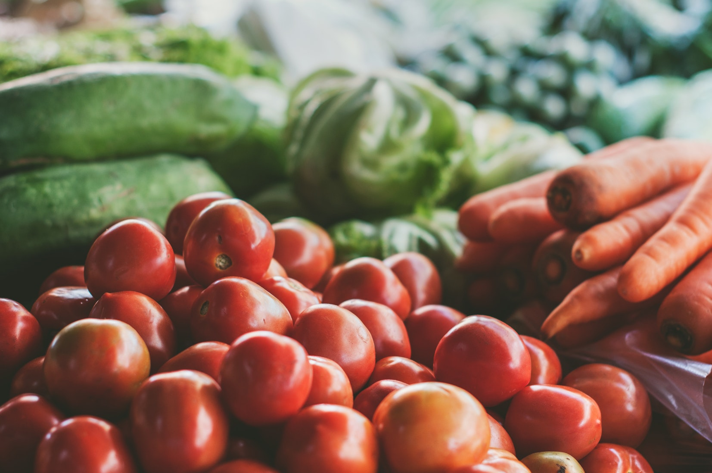

physical self-care
beauty
Finding time to take care of yourself is important…
Take time to make natural face masks, hair masks or body scrubs which provide great healing properties.
These will help you feel replenished and will make you look it too.
- Turmeric: helps inflammatory skin conditions like acne. Caution - usesmall amounts to avoid tinting your skin!
- Honey: Keeps your skin fresh with its antibacterial and moisturizing qualities
- Yogurt: Yogurt has lactic acid which leaves your skin and exfoliated.
- Avocado: contains great ingredients for the skin such as iron, calcium, copper and Vitamins A, E and B. It provides a glowing effect after applied to the skin when mixed with a touch of honey.
- Banana: Banana is great for dry skin as it adds moisture and hydrates and smoothes the skin
- Coconut Oil: Coconut oil leaves the skin feeling soft and smooth!
- Chocolate: the smell of chocolate has calming effects and cocoa powder helps hydrate the skin
- Oats: It gently exfoliates the skin when mixed with some liquids such as honey and yogurt
These are 6 easy diy face masks using some of the ingredients mentioned above.



Fitness
For some, fitness is an exciting topic and for others, it’s the complete opposite. Regular exercise can calm one’s mind and give them a chance to destress, take a break from life’s many challenges and focus on something else.
Consider these different options if you feel like exercising or trying something new:
- Going on a run or jog
- Playing soccer with a friend or family member
- Swimming
- Playing basketball
- Hiking, a great way to explore nature and get in an exercise)
- Yoga, not only a great way to get toned but also combines meditation, a mental and physical exercise
- Ice skating or roller skating
- Riding a bicycle
- Going to the gym to do cardio, lift weights or both!
- Doing gymnastics
- Playing tennis
- Playing badminton
nutrition
Supply your body with foods that are good for you. Having a good diet does not mean serious dieting or fasting, it simply means providing your body with the essential nutrients and vitamins it needs. And it does not mean cutting off all your favorite treats, it simply means maintaining a balance with your eating choices.
- Meal planning if you are a busy person is a great way to make yourself healthy foods at once and avoid buying food outside
- Finding time to cook food at home, cooking your own food is extremely rewarding and fun. Making time may be challenging but it can be done with small changes such as if you can leave your job a few minutes earlier a few times a week or putting aside a few minutes on the weekends
- Subscribing to free websites that meal plan for you and recommend you new foods to try can be a great way to be inspired
This link provides free healthy meal plans for 31 days.

